Index of Topics
- - A -
- The Accelerator Editor Menu Bar
The Accelerator Editor Toolbar
Accelerator Editor: Accelerator Item List
Accelerator Editor: Action Buttons
Accelerator Editor: Attributes Area
Accelerator Editor: Changing Memory Options
Accelerator Editor: Copy To
Accelerator Editor: Resource Name Field
Accelerator Editor: Save As
Accelerator Editor: Update
Accelerator Functions
Adding a New Accelerator Item
- C -
- Changing an Existing Accelerator Item
Creating a New Accelerator Table
- D -
- Deleting Accelerator Items
Deleting All Accelerator Items
Deleting an Accelerator Item
- E -
- Editing the Key Value
- O -
- The Open Watcom Accelerator Editor
Opening an Existing Accelerator Table
- Q -
- Quitting the Accelerator Editor
- R -
- Renaming an Accelerator Table
- S -
- Saving Accelerator Items
Starting the Accelerator Editor
- U -
- Using Shortcuts to Create Accelerator Tables
Using the Accelerator Editor
Using the Accelerator Editor Window
The Open Watcom Accelerator Editor
The Accelerator Editor enables you to create and edit accelerator items so you can invoke menu items without using a mouse.
Accelerators define hot keys for menu items in your application. These enhance the user interface for more advanced
users of the application.
Accelerators are keyboard equivalents for menu items, such as Ctrl+S or F2. For example, many applications associate
the accelerator Ctrl+C with the Copy item in the Edit menu. The Windows Interface: An Application Design
Guide suggests some standard accelerators.
An accelerator item is made up of a key value, menu item identifier, and flags. These components define the
key combination the user presses to access the specified menu item. The Accelerator Editor stores the accelerator items
in an accelerator table. You can have multiple accelerator tables for a resource file.
The accelerator editor allows you to create new accelerators and edit existing accelerators without having to create
a resource script or use a resource compiler. Without the accelerator editor, you would have to use the resource compiler
to add accelerators to your applications.
Using the Accelerator Editor
This section discusses the following topics:
- Starting the Accelerator Editor
- Quitting the Accelerator Editor
- The Accelerator Editor Menu Bar
- The Accelerator Toolbar
Starting the Accelerator Editor
The Accelerator Editor may be invoked in one of two ways. The first involves first starting the Resource Editor
then starting the Accelerator Editor. The second way the editor may be started is from the Open Watcom IDE.
To start the Accelerator Editor from the Resource Editor, you must first open the Resource Editor. How you proceed
depends on whether you are opening a new (empty) accelerator table or an existing accelerator table.
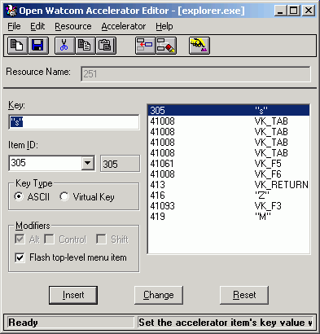
Figure 1. The Accelerator Editor window
Creating a New Accelerator Table
- To create a new accelerator table:
-
(1)
- Double click on the Resource Editor icon in your Windows Program Manager.
The Open Watcom Resource Editor window opens.
(2)
- Open a new or existing resource file.
(3)
- Choose Accelerator from the cascading menu that appears when you choose New from the Resouce menu.
The Open Watcom Accelerator Editor window opens and displays an empty accelerator item list.
Opening an Existing Accelerator Table
- To open an existing accelerator table:
-
(1)
- Double click on the Resource Editor icon in your Windows Program Manager.
The Open Watcom Resource Editor window opens.
(2)
- Open an existing resource file.
The Resource window for the existing resource file displays buttons representing each existing resource type.
(3)
- Select the accelerator table button to view the existing accelerator tables.
or
- Choose Accelerator from the cascading menu that appears when you choose View from the Resource menu.
The Accelerator Resources list appears revealing all accelerator tables in this resource file.
(4)
- Double click on the existing accelerator table you want to open.
or
- Click on the desired accelerator table to select it, then press ENTER
or
- Click on the desired accelerator table to select it and choose Edit from the Resource menu on the Open Watcom Resource
Editor window.
The Open Watcom Accelerator Editor window opens and displays the existing accelerator items for the selected accelerator
table.
Quitting the Accelerator Editor
To exit the Accelerator Editor, choose Exit from the File menu of the Open Watcom Accelerator Editor window.
If you made changes to accelerator items but did not save the information, a message box prompts you to save before
exiting. Choose Yes to save the changes and exit, No to exit without saving the changes, or Cancel to return to the
Open Watcom Resource Editor window.
When you exit the Accelerator Editor, the application remembers the directory in which you last opened or saved an
accelerator table (not the resource file). The next time you open an accelerator table, the last directory accessed
appears in the File Selection dialog so you do not have to reenter its path. This feature makes the Accelerator Editor
more convenient and efficient to use.
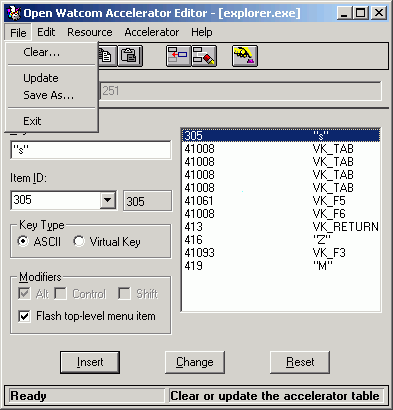
Figure 2. The Accelerator Editor menu bar
The menu bar consists of the following five menus:
- File
- Clear and save the accelerator table, and exit the Accelerator Editor
Edit
- Access the clipboard functions, hide or show the toolbar, and delete an accelerator item
Resource
- Rename the accelerator table and change its memory flags
Accelerator
- Insert and edit accelerator items
Help
- Access on-line help information
To see the function of an item on the menu bar or submenus, hold the mouse button and drag the cursor over the desired
menu item. A description of the item appears in the status line at the bottom of the screen. If you do not want
to select the menu item, drag the cursor off of the menu item before releasing the mouse button.
In the Open Watcom Accelerator Editor window, the toolbar appears below the menu bar. When the toolbar is shown
choose Hide Toolbar from the Edit menu to hide it. When the toolbar is hidden you can display it by choosing Show Toolbar
from the Edit menu.
Figure 3. The Accelerator Editor toolbar
The following explains the function each toolbar button performs, as well as the equivalent menu item.
- CLEAR
- Clear the accelerator table. This is equivalent to the Clear item in the File menu.
UPDATE
- Update the resource file with this accelerator table. This is equivalent to the Update item in the File menu.
CUT
- Cut the current accelerator table to the clipboard. This is equivalent to the Cut item in the Edit menu.
COPY
- Copy the current accelerator table to the clipboard. This is equivalent to the Copy item in the Edit menu.
PASTE
- Paste the accelerator table from the clipboard to the current accelerator table. This is equivalent to the Paste item
in the Edit menu.
INSERT
- Insert the new accelerator item into the accelerator table. This is equivalent to the Insert New Item item in the Accelerator
menu.
DELETE
- Delete the selected accelerator item from the accelerator table. This is equivalent to the Delete item in the Edit menu.
KEY VALUE
- Set the accelerator item's key value using the keyboard. This is equivalent to the Key Value item in the Accelerator
menu.
To see the function of a button on the toolbar, position your cursor over the desired icon. A description of the
button's function appears in the status line at the bottom of the window.
Using the Accelerator Editor Window
The Open Watcom Accelerator Editor window contains a menu bar, toolbar, and status line to help you create and edit accelerators.
The rest of the window, the workspace, is divided into four sections:
- Resource Name Field
- Attributes Area
- Accelerator Item List
- Action Buttons
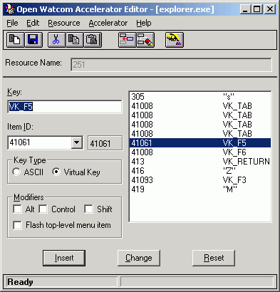
Figure 4. The Accelerator Editor window contains a menu bar, toolbar, status line, and
workspace.
Accelerator Editor: Resource Name Field
The Resource Name field in the Open Watcom Accelerator Editor window contains the name of the accelerator table currently
being edited. A resource file can contain more than one accelerator table, so it is important that the resource names
for the accelerator tables be unique. The Resource Name field is not case sensitive and can hold up to 255 characters.
You can enter a textual name, a number or a symbol in this field.
When you create a new accelerator table, the Resource Editor assigns the default name ACCELERATOR_# to it, where #
is a decimal number starting at one and increasing for each new resource of that type opened. You can rename the accelerator
table using the Rename item in the Resource menu.
Accelerator Editor: Attributes Area
The attributes area provides information about the currently selected accelerator item. You can edit accelerator
items using only the fields in this area.
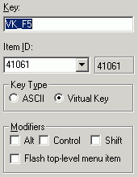
Figure 5. The Accelerator Editor attributes area
Accelerator item attributes are displayed in four sections. Following is an explanation of each section.
- Key
- The Key field contains the key value used to activate the menu item.
Menu Item ID
- The two Menu Item ID fields contain:
- the number of the menu item that is activated by the entry in the Key field.
- the symbol information for the selected menu item.
Key Type
- This section indicates if the key value is in ASCII or virtual key.
Modifiers
- An X appears in the check box for the modifiers that are part of the accelerator key value. The available modifier keys
are:
The option Flash Top-level Menu Item indicates that when the specified key value is used, the Accelerator Editor briefly
highlights the corresponding menu bar item.
Accelerator Editor: Accelerator Item List
The accelerator item list displays all of the accelerator items in the current accelerator table. Use this list
to view the attributes of the accelerator items. Select an accelerator item from the list by clicking on it.
Details of the selected accelerator item appear in the attributes area of the window.
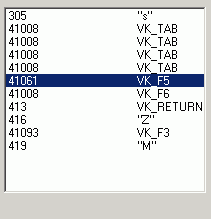
Figure 6. The Accelerator Editor item list
The action buttons control how the information in the attributes area is handled by the editor. The Insert button
will use the contents of the attributes area to create a new entry in the table. The Change button will use the contents
of the attributes area to modify the current entry in the table. The Reset button will discard the contents of the
attributes area and reset them to those of the current entry in the table. The Insert button is the default button
when the ENTER key is pressed and no other button has the focus.
Figure 7. The Accelerator Editor action buttons
Accelerator Functions
You can perform several functions with the Accelerator Editor. This section describes the following tasks:
- Adding a New Accelerator Item
- Changing an Existing Accelerator Item
- Deleting Accelerator Items
- Renaming an Accelerator Table
- Saving Accelerator Items
- Using Shortcuts to Create Accelerator Tables
- Changing Memory Options
Adding a New Accelerator Item
The steps for adding a new accelerator item to the accelerator table are the same, regardless of whether the accelerator
table is empty or already contains accelerator items.
- To add a new accelerator item:
-
(1)
- Position the cursor in the Key field.
(2)
- Enter the desired key value that will activate the menu item.
You can enter a single key, such as a letter or number, or a key sequence. A key sequence may be made up of a modifier
and a key, such as ^k for Ctrl+k.
(3)
- Enter a symbol or numeric identifier for the menu item that is activated by the entry in the Key field.
The symbol or numeric identifier you enter here is the identifier associated with the menu item. This relationship
is defined in the Menu Editor. If you do not know the desired menu item identifier, open the appropriate menu and look
up the identifier. It is not possible for the Accelerator Editor to get this information for you.
(4)
- Specify ASCII or Virtual Key in the Key Type section of the window.
- ASCII Keys
- When the Key Type specified is ASCII, keys you press appear as characters, such as a, B, 2, or $. In the
Key field, the ASCII characters are surrounded by quotation marks. For example, c appears as "c"
and Ctrl+C appears as "^C". When using ASCII characters as accelerators, you may combine them
with the Ctrl key to form key sequences, such as Ctrl+X or Ctrl+P. There is no symbol to represent the Shift key in
ASCII. Applying the Shift key with an ASCII character results in an upper case character in the Key field. For
example, Shift+d appears as "D".
Virtual Keys
- When the Key Type specified is Virtual Key, you enter the standard Windows identifier for the desired key. For example,
the Windows identifier for the Home key is VK_HOME. The header file WINDOWS.H defines these identifiers.
To avoid looking up these identifiers yourself, use the Key Value function explained in the section Editing the Key Value.
To specify whether the Alt, Ctrl, or Shift keys must be pressed with another key to form a key sequence, mark the appropriate
check box in the Modifiers section of the attributes area.
(5)
- Select the desired modifiers in the Modifiers section.
Modifiers are flags indicating keys that you must press in addition to the specified key value to activate the menu item.
When the ASCII option is selected, the Control and Shift modifiers are not available.
(6)
- Press the Insert action button
or
- Choose Insert New Item from the Accelerator menu.
or
- Select the Insert New Item button on the toolbar.
The Accelerator Editor adds the new accelerator item to the accelerator table. When accelerator items exist in the
accelerator table, one item is always selected. Choosing the Insert New Item menu item or button positions the new
accelerator item directly after the selected accelerator item in the list.
Changing an Existing Accelerator Item
You may want to change the key value or the menu item identifier associated with an accelerator item.
- To modify an existing accelerator item:
-
(1)
- Click the accelerator item you want to modify.
The selected accelerator item appears highlighted in the accelerator item list and the accelerator item details appear
in the attributes area of the window.
(2)
- Enter the new accelerator item details in the attributes area.
(3)
- Press the Change action button
These actions update the selected accelerator item with the modified accelerator item attributes.
Editing the Key Value
When editing only the key value of an accelerator item, use the Key Value function. With this function, the Accelerator
Editor looks up the correct virtual key value for the selected key and inserts it into the accelerator item list for you.
This is a quick way to make accelerator item changes, but it only applies to accelerator items whose key type is Virtual
Key.
- To use the Key Value function:
-
(1)
- Choose the accelerator table you want to work with from the Resource window on the Open Watcom Resource Editor window.
The Accelerator Editor window appears displaying all of the accelerator items for the selected accelerator table.
(2)
- Click on the accelerator item you want to modify.
The selected accelerator item appears highlighted in the accelerator table and the accelerator item details appear in
the attributes area of the window.
(3)
- Choose Select Key Value from the Accelerator menu
or
- Select the Key Value button on the toolbar.
The accelerator table disappears and instructions for using the Key Value function appear in its place.
(4)
- Press the desired key on the keyboard.
This is the key that you want to activate the menu item specified in the Menu Item field. The instructions disappear
from the window revealing the modified accelerator table. The updated accelerator item is still selected.
(5)
- Change modifiers, if required.
Deleting Accelerator Items
There are two functions you can use to delete accelerator items from the accelerator table:
The Delete item in the Edit menu deletes the selected accelerator item from the accelerator item list. You can delete
only one accelerator item at a time with this function.
The Clear item in the File menu deletes all accelerator items in the current accelerator table. This is a powerful
function and must be used carefully to avoid accidentally deleting all accelerator items.
Deleting an Accelerator Item
To delete accelerator items from the current accelerator table one at a time:
- (1)
- Select the accelerator item you want to delete from the accelerator item list by clicking on it.
The selected accelerator item is highlighted.
(2)
- Choose Delete from the Edit menu
or
- Select the Delete button from the toolbar.
The Accelerator Editor removes the selected item from the accelerator item list.
(3)
- Choose Update from the File menu to save the accelerator table changes.
Deleting All Accelerator Items
To delete all accelerator items in the current accelerator table:
- (1)
- Choose Clear from the File menu
or
- Select the Clear button from the toolbar.
A message box appears prompting you to verify that you want to clear all accelerator items from the current accelerator
table.
(2)
- Choose Yes or No to continue.
Choosing Yes removes all accelerator items from the current accelerator table. The accelerator item list is empty.
Choosing No cancels the operation.
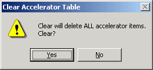
Figure 8. As a safety feature, a message box appears when you choose the Clear function.
Renaming an Accelerator Table
When you create an Accelerator Table, the Resource Editor assigns a default name to it. Assign a new name to the
accelerator table using the Rename function.
- To rename an accelerator table:
-
(1)
- Choose Rename from the Resource menu on the Open Watcom Accelerator Editor window.
or
- Double click or right click on the Resource Name field.
A Rename Resource dialog box appears containing two fields:
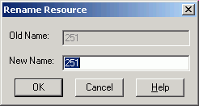
Figure 9. In the Rename Resource dialog, you enter the new name of the accelerator table.
(2)
- Enter the desired accelerator table name in the New Name field.
(3)
- Click on OK to close the Rename Resource dialog.
The dialog closes and the new accelerator table name appears in the Resource Name field.
Saving Accelerator Items
There are two functions you can use to save accelerator tables with the Accelerator Editor:
Each of these options performs a different type of save function. This section describes how to use each function.
Accelerator Editor: Update
After modifying an accelerator item in an accelerator table, choose Update from the File menu on the Accelerator Editor
window to save the updated accelerator table to the current resource file. This prevents the changes from being lost
when you exit the Accelerator Editor.
The Update function updates the resource file only at the resource level. The resource file is not saved until
you perform a save at the Resource Editor level as well. Exiting the Resource Editor without saving causes you to lose
the accelerator table changes made.
Accelerator Editor: Save As
Choose Save As from the File menu on the Accelerator Editor window to save the current accelerator table to another resource
file.
If you added any new symbol names (Item ID's), a Save Symbol Header File dialog appears which allows you to create
a new header file which includes the newly added symbol names.
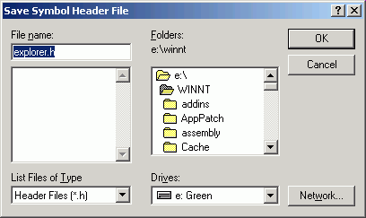
Figure 10. On the Save Symbol Header File dialog, specify the header file to which you
want to save symbol ID's.
Afterwards, a Save Accelerator Table dialog appears where you specify the resource file to which you want to save
the current accelerator table.
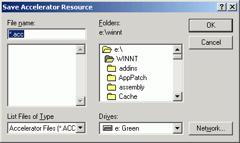
Figure 11. On the Save Accelerator Table dialog, specify the resource file to which you
want to save the accelerator table.
- Important:
- If the resource file to which you are saving the accelerator table already contains resources, the existing resources will
be discarded and replaced with the accelerator table you are saving.
Accelerator Editor: Copy To
Choose Copy To from the Resource menu of the Accelerator Editor window to copy the current accelerator table into an existing
resource file.
If you added any new symbol names (Item ID's), a Save Symbol Header File dialog appears which allows you to create
a new header file which includes the newly added symbol names.
Figure 12. On the Save Symbol Header File dialog, specify the header file to which you
want to save symbol ID's.
Afterwards, a Copy To dialog appears where you specify the resource file to which you want to copy the current accelerator
table. Unlike the Save As function, copying an accelerator table to a resource file adds an entry to the list of resources
rather than replacing the existing resources with the new entry.
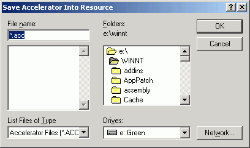
Figure 13. On the Copy To dialog, specify the resource file to which you want to copy the
accelerator table.
Using Shortcuts to Create Accelerator Tables
The Edit menu on the Open Watcom Accelerator Editor window contains some standard Windows options that you can use to
quickly create accelerator resources. The options are:
These options allow you to perform functions on accelerator tables but not on individual accelerators items.
- Cut
- Choose Cut from the Edit menu of the Accelerator Editor window to cut the accelerator item list from the current accelerator
table and place it on the clipboard.
Copy
- Choose Copy from the Edit menu of the Accelerator Editor window to copy the accelerator item list in the current accelerator
table to the clipboard.
Paste
- Choose Paste from the Edit menu of the Accelerator Editor window to copy the accelerator item list on the clipboard into the
current accelerator table.
Accelerator Editor: Changing Memory Options
The Memory Flags option allows you to change the selected memory options for the current accelerator table. These
options indicate the memory type and loading instructions.
- To set the flags for an accelerator table resource:
-
(1)
- Choose Memory Flags from the Resource menu of the Open Watcom Accelerator Editor window.
The Memory Options dialog opens displaying either the current or default memory options.
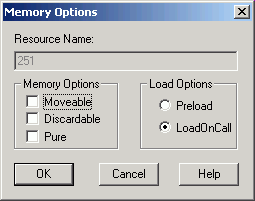
Figure 14. On the Memory Options dialog, you change the memory options for the accelerator
table.
(2)
- Select the required flags in the Memory Options and Load Options sections of the dialog by clicking on the check box
beside the field. Following is a description of each option.
- Moveable
- Selecting this option marks this accelerator table to be stored in moveable memory when it is loaded by an application.
Discardable
- Selecting this option marks this accelerator table to be stored in discardable memory when it is loaded by an application.
Pure
- When marked as Pure, Windows will not allow the memory that the accelerator table is loaded into to be modified.
Preload
- All accelerator tables marked as Preload will be loaded when the application for which you are creating the accelerator table
is loaded.
LoadOnCall
- Accelerator tables marked as LoadOnCall will only be loaded when an application issues a call to load them.
(3)
- Click on OK when all memory option selections are made.
The Memory Options dialog closes returning you to the Accelerator Editor window.